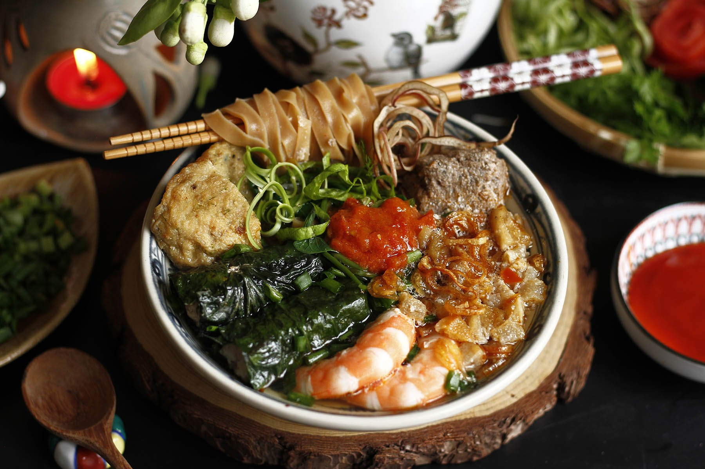

News
Hành Trình Khám Phá Ẩm Thực Hải Phòng
Lần đầu đến Hải Phòng, tôi không thể ngờ rằng thành phố cảng này lại có một nền ẩm thực phong phú đến vậy. Từ những món ăn quen thuộc nhưng mang phong cách riêng, đến những món đặc sản mà chỉ cần thử một lần cũng đủ khiến bạn nhớ mãi.
Bắt đầu ngày mới với bánh đa cua:
Chỉ cần dạo quanh bất kỳ góc phố nào ở Hải Phòng, bạn sẽ dễ dàng bắt gặp những quán bánh đa cua nhỏ xinh,
với hương thơm ngào ngạt mời gọi. Tôi chọn một quán ven đường, gọi cho mình một bát bánh đa cua đặc biệt.
Nước dùng thì ngọt thanh vị cua, sợi bánh đa đỏ thì dai dai, kết hợp với chút chả lá lốt và rau muống giòn tươi.
Từng thìa nước dùng như đang kể câu chuyện về sự mộc mạc nhưng tinh tế của con người nơi đây.
Nem cua bể: Vị giòn rụm của biển cả:
Nem cua bể Hải Phòng khác hẳn những nơi khác. Nem được gói thành hình vuông,
bên trong đầy ắp thịt cua tươi, miến, và các loại rau củ thái nhỏ. Khi chiên lên, lớp vỏ vàng ruộm, giòn tan,
cắn một miếng là cảm nhận ngay sự thơm ngon, đậm đà hương vị biển. Tôi chấm nem với nước mắm chua ngọt,
kèm thêm rau sống, và không thể ngừng ăn thêm miếng thứ hai.

Bánh mì cay – Món ăn đường phố trứ danh:
Mỗi buổi chiều, khi gió biển thổi nhẹ, chẳng gì tuyệt hơn việc cầm trên tay một chiếc bánh mì cay nóng giòn.
Chiếc bánh mì nhỏ nhắn, bên trong là lớp pate thơm béo được phết đều, ăn kèm tương ớt cay nồng đặc trưng của Hải Phòng.
Không cầu kỳ, không phô trương, món ăn này gói trọn sự giản dị và chân chất của thành phố cảng.
Chút ngọt ngào từ chè dừa dầm:
Khép lại ngày dài, tôi tìm đến một quán chè dừa dầm nổi tiếng. Cốc chè đầy ắp với dừa tươi, thạch dừa,
nước cốt dừa béo ngậy và chút đá bào mát lạnh. Đây chính là món tráng miệng
hoàn hảo để kết thúc hành trình ẩm thực Hải Phòng đầy cảm xúc.